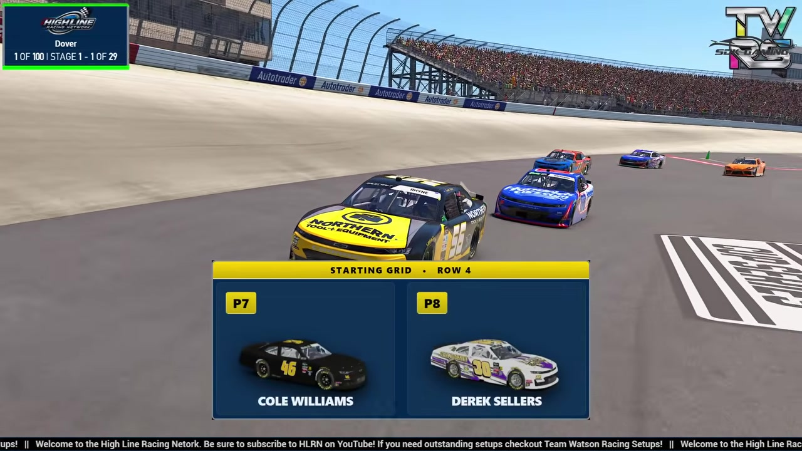

Cole Williams
Team assignment not stated in the structured owner record.
AN OFFICIAL-TAPE FOOTPRINT, NOT A RESULTS CLAIM
- Official files
- 2
- Central editions
- 0
- Exact tape cues
- 0
- Accepted podiums
- 0
Cole Williams appears in 2 official HLRN broadcast files across Season 1. The current result ledger does not assign this driver a supported top-three finish. A consistently stated team affiliation remains open for owner review. The currently indexed source window runs from January 19, 2026 through February 16, 2026.
The primary chapter index supplies 0 direct jump points. No repeat track fingerprint is yet supported. No primary-race chapter currently carries this identity, so the dossier does not invent a competitive tape profile. A source-attributed car frame is published with its original video and timestamp. That is the current discovery map for Cole Williams.
Official name signals are used for discovery only. They do not become starts, points, incident counts, or an ability grade. This page is deliberately detailed about the tape and restrained about the unavailable competition record. No Highline Live bonus file is currently attached to this identity. The displayed name is labeled broadcast grid confirmed; that status remains visible so an owner roster can strengthen or correct the identity without rewriting the evidence trail. Those boundaries define Cole Williams's public HLRN file.
Verified team history is not consistently stated. No position-specific top-three result is currently accepted. The public spelling has broadcast identity support; an owner roster can still add legal-name, number, and team-history detail.